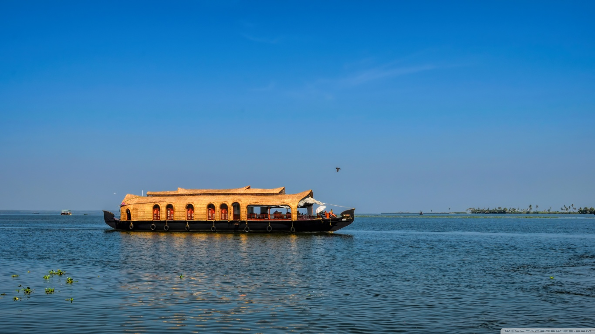

KERALA TOURISM
Kerala, a state situated on the tropical Malabar Coast of southwestern India, is one of the most popular tourist destinations in the country. Named as one of the ten paradises of the world by National Geographic Traveler, Kerala is famous especially for its ecotourism initiatives and beautiful backwaters. Its unique culture and traditions, coupled with its varied demography, have made Kerala one of the most popular tourist destinations in the world. Several international agencies ranging from UNESCO to National Geographic have recognised the state's tourism potential. Kerala was named by TIME magazine in 2022 among the 50 extraordinary destinations to explore in its list of the World’s Greatest Places. In 2023, Kerala was listed at the 13th spot in The New York Times' annual list of places to visit and was the only tourist destination listed from India.
mail: Rahulct222@gmail.com
tel: 9656437681